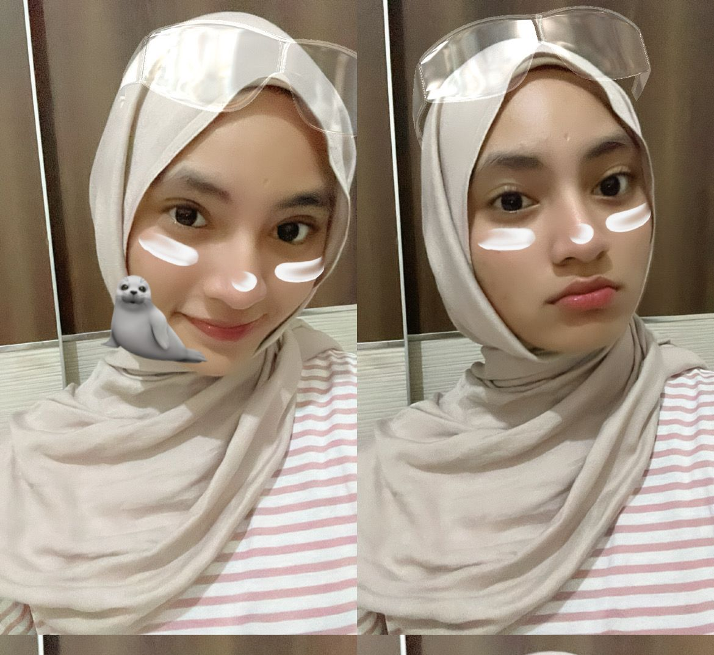
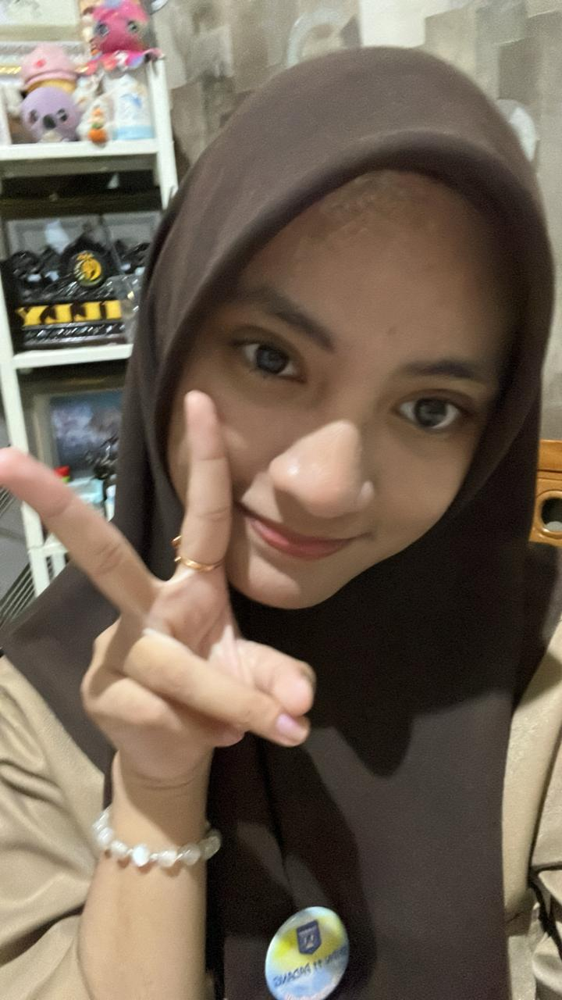
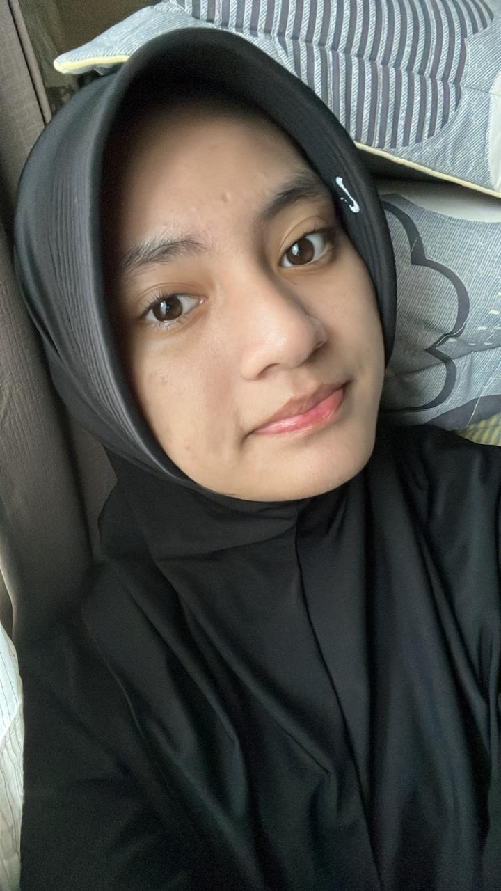

Kehadiranmu
Di banyak hari, hadirnya kamu membuat dunia terasa lebih tenang dan aku merasa tidak sendirian.
Gosok layar untuk membuka
Gosok sebanyak 2 kali untuk ke websiteSepuluh bulan bersamamu bukan waktu yang ingin aku anggap biasa. Di sini kusimpan rasa terima kasih, rindu, dan cinta yang masih punya tempat di hatiku.

Sepuluh bulan bersamamu mengajarkanku bahwa bahagia sering tinggal dalam hal-hal sederhana: percakapan kecil, tawa, perhatian, dan hadirnya kamu.
Di banyak hari, hadirnya kamu membuat dunia terasa lebih tenang dan aku merasa tidak sendirian.
Tawamu menjadi salah satu suara yang ingin kusimpan baik-baik di ingatan.
Kita punya cerita yang tidak selalu sempurna, tetapi setiap bagiannya pernah sangat berarti bagiku.
Buka surat ini perlahan. Ada rasa terima kasih dan cinta dari sepuluh bulan yang selalu punya tempat di hatiku.
Mungkin bagi dunia ini hanya foto biasa. Tapi Bagiku, ini istimewa .

senyum mu begitu indah

pipimu yang begitu lucu
Ada perasaan yang sulit dirapikan menjadi kalimat. Mungkin lagu ini bisa menemani kata-kata yang belum pandai kusampaikan.
Aku tidak tahu bagaimana hari-hari akan berjalan setelah ini. Aku hanya ingin kamu tahu: aku sungguh mencintaimu. Terima kasih telah menemaniku selama sepuluh bulan, untuk tawa, perhatian, dan kenangan yang akan selalu kujaga. Jika jalan kita kini berbeda, aku tetap berharap hidup memperlakukanmu dengan lembut. Kamu pernah menjadi bagian paling indah dari hariku, dan itu tidak akan kuhapus dari ingatan.
Ada banyak hal indah di dunia ini, tapi entah kenapa mataku selalu punya alasan untuk memilih kamu sebagai yang paling indah.
Senyum kamu itu sederhana, tapi punya cara sendiri buat bikin hari yang biasa aja terasa jauh lebih indah.
Kamu ngga perlu berusaha jadi sempurna untuk terlihat cantik. Jadi diri kamu sendiri aja, itu udah lebih dari cukup.
Cantik itu mungkin kata yang terlalu sederhana buat menggambarkan kamu. Soalnya, ada sesuatu dari kamu yang susah dijelaskan, tapi gampang banget dikagumi.
Kalau ada yang tanya apa hal favoritku, mungkin jawabannya bukan sebuah tempat atau benda. Tapi seseorang yang bahkan tanpa sadar bisa bikin aku kagum berkali-kali: kamu.